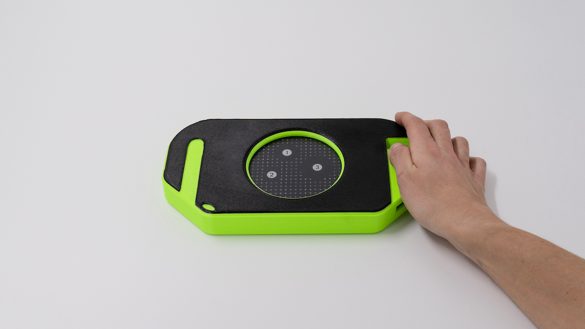
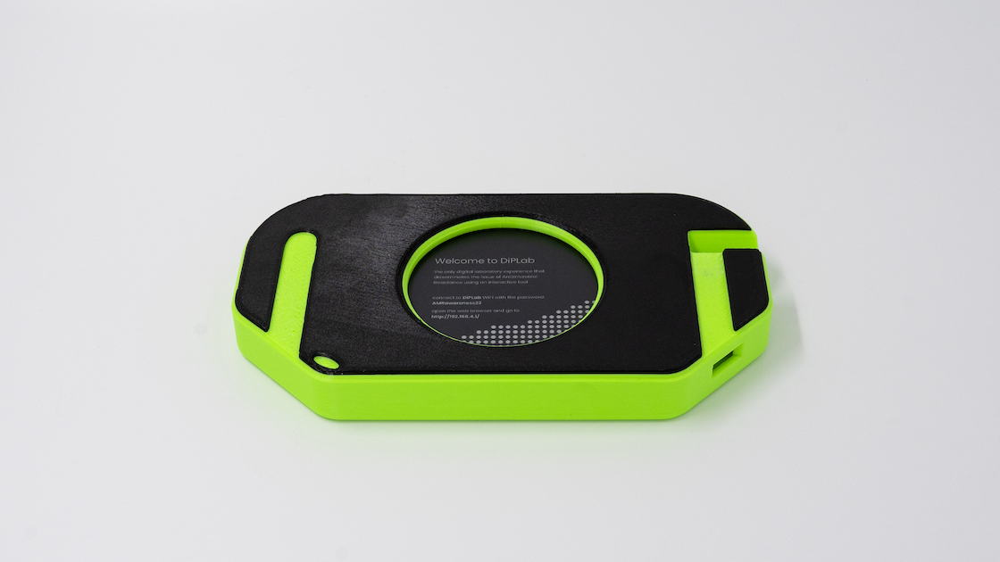

DiPLab - Digital Petri Laboratory
Thanks to the digitization of the antibiogram test, it is now possible to experience it outside of microbiology laboratories. This workshop offers participants an exciting opportunity to deepen their understanding of antibiotics and antibiotic resistance. In addition, participants will have the chance to engage in a range of practical activities and learn about the test in a hands-on setting. This comprehensive workshop aims to help participants gain a deeper appreciation of the significance of antibiotics and the impact they have on our daily lives. By participating in this workshop, attendees will be able to broaden their knowledge of antibiotics and antibiotic resistance, and explore the role of these life-saving drugs in modern medicine.
The experience is preceded by an introduction made from a Microbiologist or a tutor. Users are guided in the use of the DiPLab Petri by their smartphones, which progressively give instructions to them. After inserting the user’s name and the class code provided by the facilitator, the participant need to choose a bacteria as a base for the Petri. After the spreading, done tilting the product, is required to select the three antibiotics to then complete the Petri. Similarly to the previous interaction, the user now is required to shake the DiPLab Petri in order to randomly place the ABs tabs. The digital Petri dish is now completed, the smartphone’s interface is now suggesting the two visualisations modalities: history and microscope mode. Thanks to the first one is it possible to visualise the DiPLab Petri at 0h, 8h, 12h and 24h. With the second is instead possible to zoom in inside the digital Petri with a 4x, 10x, 40x. The last interaction is a recap of the experience where the information about bacteria and antibiotics used are displayed. The experience is saved into the DiPLab repository and the user can also share an image that represents the Petri done.
 
Matteo Subet is an interaction designer with a strong focus on tangible products and the technical aspects of design. Matteo started his education as a surveyor before earning degrees in product and nautical design from the University of Genoa. Afterwards, he pursued a master's degree in interaction design. In 2016, he founded EMAT, a company that focuses on digital communication in Italy that he left in 2018. During the same year, he joined BookYourBeach, which specializes in the digitalization of Italian beach resorts. Currently, he works as a teaching and research assistant at SUPSI. Here, he shares and expands his knowledge on prototyping for interaction design and works on various education projects involving new technologies.
DiPLab began as a thesis project during the SUPSI Master of Arts in Interaction Design. The research focused on finding ways to disseminate information about Antimicrobial Resistance to high school students. The biggest challenge was addressing this complex topic to the target user. The research was divided into two parts: a quantitative study that collected information on other projects and delved into the field of microbiology science, and a qualitative study that gathered insights from experts who work with teenagers. After collecting all the insights, a workshop was conducted at the Junior Design Research Conference in Basel. Students from Swiss Design Universities co-designed some possible ideas. The project continued with the first prototypes that were tested and refined until the final idea was shaped. In February 2023, the project was completed and presented to the Master’s Commission. The journey continued with further user testing of the working product to refine it as much as possible before launching workshops in collaboration with Makeaware!.
This format will be run on the 1st of December during the TechDay initiative.
More information will follow.